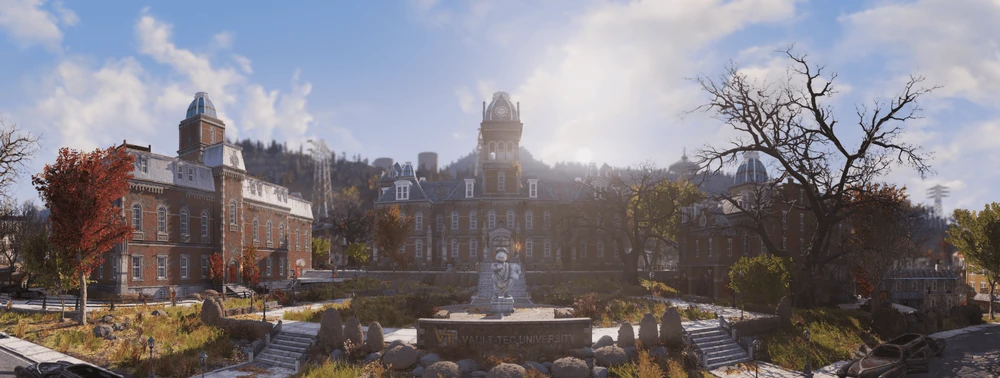
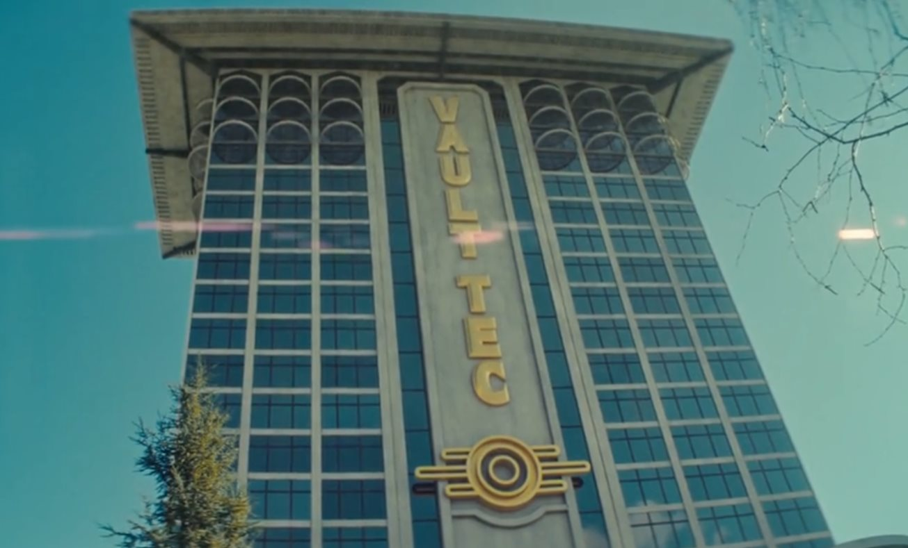

Vault-Tec is a defense company in the business of preservation. In 2031, Vault-Tec acquired West Virginia University, becoming Vault-Tec University. Here, we invested the brightest minds our great country has to offer in the pursuit of preserving the American way of life in the event of a catastraophe.
In 2054, the United States government enacted Project Safehouse, a national defense plan to create shelters to protect the American population from natural or manmade disasters. Seeing an opportunity to provide a great service to our fellow Americans, Vault-Tec constructed a demonstration Vault in Los Angeles, and was rewarded the bid by the American government to begin constructing Vaults across the Commonwealth. Shortly after, we opened our new headquarters in Washington D.C.
Today, Vault-Tec is working tirelessly across our great nation, constructing over 100 Vaults in the interest of preserving the lives of true patriots, like you dear readers. Please navigate to our Sign Up form to reserve your spot today!